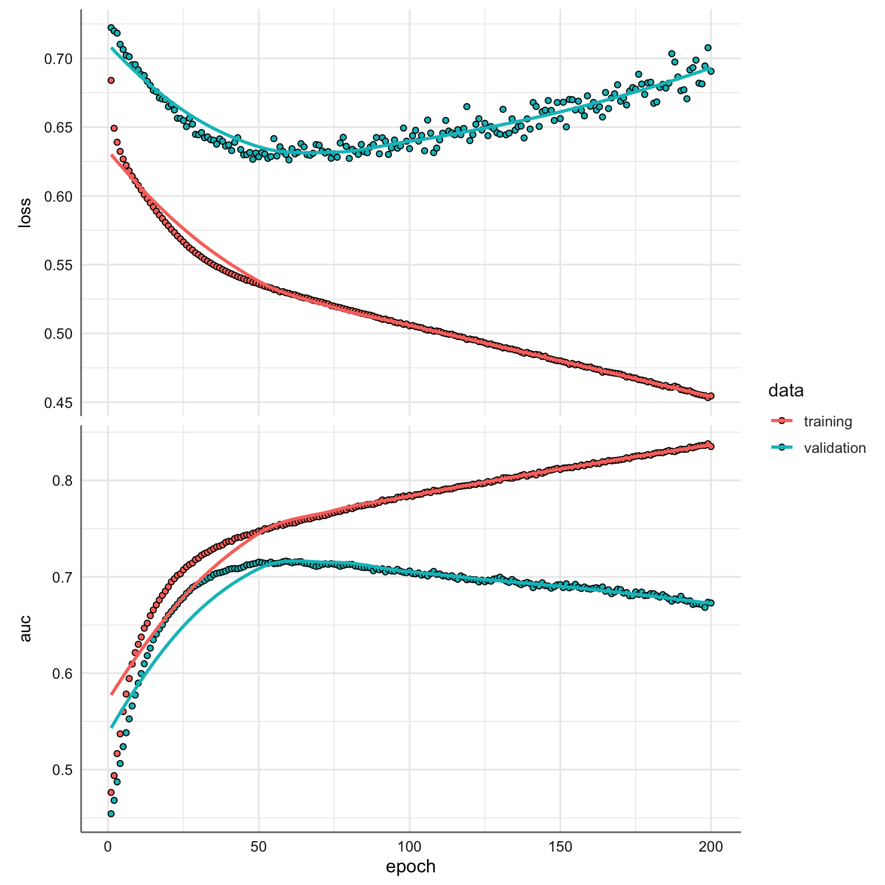
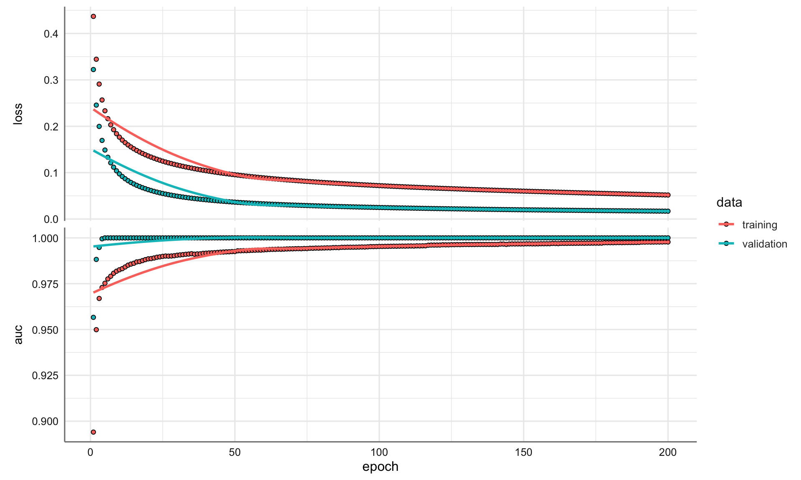

4 Aplicaciones Redes multicapa densas
En este tema nos enfrentamos a diferentes bancos de datos donde utilizaremos redes densas para problemas de clasificación y regresión, y pondremos en práctica todos los conceptos vistos en el tema anterior. En primer lugar presentamos los diferentes bancos de datos con los que trabajaremos a lo largo de este tema.
Cargamos las librerías necesarias para el trabajo en este tema:
4.1 Conjuntos de datos
Vamos a trabajar con cuatro bancos de datos: dos enfocados en problemas de regresión y los otros dos en problemas de clasificación. En cada uno de ellos se establece el objetivo que se persigue, los inputs o predictoras consideradas, la presencia o no de observaciones anómalas, y el código necesario para la carga de datos.
4.1.1 Diabetes
En un estudio sobre la diabetes se obtuvieron diez variables basales, edad, sexo, índice de masa corporal, presión arterial media y seis mediciones de suero sanguíneo para 442 pacientes diabéticos, así como la respuesta de interés, una medida cuantitativa de la progresión de la enfermedad un año después de la entrada al estudio.
Características del banco de datos:
- Target: Y (progresión de la enfermedad)
- Valores perdidos: no
- Número de registros: 442
- Número de inputs: 10
Variables contenidas:
- AGE: edad (en años)
- SEX: sexo (1 = Hombre, 2 = Mujer)
- BMI: índice de masa corporal
- BP: promedio de la presión sanguínea
- S1: colesterol sérico total
- S2: lipoproteínas de baja densidad
- S3: lipoproteínas de alta densidad
- S4: colesterol total
- S5: registro del nivel de triglicéridos en suero
- S6: nivel de azúcar en sangre
url = "https://raw.githubusercontent.com/ia4legos/MachineLearning/main/data/diabetes.tab.txt"
diabetes = read_delim(url, col_types = "dfddddddddd")
# Estructura de los datos
str(diabetes)spc_tbl_ [442 × 11] (S3: spec_tbl_df/tbl_df/tbl/data.frame)
$ AGE: num [1:442] 59 48 72 24 50 23 36 66 60 29 ...
$ SEX: Factor w/ 2 levels "2","1": 1 2 1 2 2 2 1 1 1 2 ...
$ BMI: num [1:442] 32.1 21.6 30.5 25.3 23 22.6 22 26.2 32.1 30 ...
$ BP : num [1:442] 101 87 93 84 101 89 90 114 83 85 ...
$ S1 : num [1:442] 157 183 156 198 192 139 160 255 179 180 ...
$ S2 : num [1:442] 93.2 103.2 93.6 131.4 125.4 ...
$ S3 : num [1:442] 38 70 41 40 52 61 50 56 42 43 ...
$ S4 : num [1:442] 4 3 4 5 4 2 3 4.55 4 4 ...
$ S5 : num [1:442] 4.86 3.89 4.67 4.89 4.29 ...
$ S6 : num [1:442] 87 69 85 89 80 68 82 92 94 88 ...
$ Y : num [1:442] 151 75 141 206 135 97 138 63 110 310 ...
- attr(*, "spec")=
.. cols(
.. AGE = col_double(),
.. SEX = col_factor(levels = NULL, ordered = FALSE, include_na = FALSE),
.. BMI = col_double(),
.. BP = col_double(),
.. S1 = col_double(),
.. S2 = col_double(),
.. S3 = col_double(),
.. S4 = col_double(),
.. S5 = col_double(),
.. S6 = col_double(),
.. Y = col_double()
.. )
- attr(*, "problems")=<externalptr> 4.1.2 Qsar
Este conjunto de datos se utilizó para desarrollar modelos QSAR de regresión cuantitativa para predecir la toxicidad acuática aguda hacia el pez Pimephales promelas (pececillo de cabeza plana) sobre un conjunto de 908 sustancias químicas. Como variable a predecir se consideraron los datos de la LC50, que es la concentración que provoca la muerte del 50% de sujetos sometidas a prueba durante 48 horas.
Características del banco de datos:
- Target:
LC50 - Valores perdidos: no
Variables contenidas:
- TPSA (propiedades moleculares),
- SAacc (propiedades moleculares),
- H-050 (fragmentos centrados en átomos),
- MLOGP (propiedades moleculares),
- RDCHI (índices de conectividad),
- GATS1p (autocorrelaciones 2D),
- nN (índices constitucionales),
- C-040 (fragmentos centrados en átomos),
- LC50
4.1.3 Water potability
El agua potable es el derecho humano más básico y un factor importante para la salud. El conjunto de datos Water potability, tiene por objetivo estudiar la potabilidad del agua utilizando varias propiedades químicas debido a su importancia como cuestión de salud y desarrollo a nivel nacional, regional y local. En algunas regiones, se ha demostrado que las inversiones en abastecimiento de agua y saneamiento pueden producir un beneficio económico neto, ya que la reducción de los efectos adversos para la salud y los costes de la atención sanitaria superan los costes de las intervenciones.
Características del banco de datos:
- Target: potability
- Valores perdidos: sí (variables ph, Sulfate y Trihalomethanes)
- Número de registros: 3276
- Número de variables: 10
Variables contenidas:
- pH: valor del pH.
- Hardness: dureza o capacidad del agua para precipitar el jabón causado por el calcio y el magnesio.
- Solids: sólidos disueltos totales (en partes por millón)
- Chloramines: cantidad de cloraminas (en partes por millón)
- Sulfate: cantidad de sulfatos disueltos (en mg/L)
- Conductivity: conductividad eléctrica del agua (en μS/cm)
- Organic_carbon: cantidad de carbono orgánico (en partes por millón)
- Trihalomethanes: cantidad de trihalometanos (en μg/L)
- Turbidity: medida de la propiedad de emisión de luz del agua en NTU.
- Potability: indica si el agua es segura para el consumo humano (1 = potable y 0 = no potable)
url = "https://raw.githubusercontent.com/ia4legos/MachineLearning/main/data/water_potability.csv"
waterpot = read_csv(url)
# Estructura de los datos
str(waterpot)spc_tbl_ [3,276 × 10] (S3: spec_tbl_df/tbl_df/tbl/data.frame)
$ ph : num [1:3276] NA 3.72 8.1 8.32 9.09 ...
$ Hardness : num [1:3276] 205 129 224 214 181 ...
$ Solids : num [1:3276] 20791 18630 19910 22018 17979 ...
$ Chloramines : num [1:3276] 7.3 6.64 9.28 8.06 6.55 ...
$ Sulfate : num [1:3276] 369 NA NA 357 310 ...
$ Conductivity : num [1:3276] 564 593 419 363 398 ...
$ Organic_carbon : num [1:3276] 10.4 15.2 16.9 18.4 11.6 ...
$ Trihalomethanes: num [1:3276] 87 56.3 66.4 100.3 32 ...
$ Turbidity : num [1:3276] 2.96 4.5 3.06 4.63 4.08 ...
$ Potability : num [1:3276] 0 0 0 0 0 0 0 0 0 0 ...
- attr(*, "spec")=
.. cols(
.. ph = col_double(),
.. Hardness = col_double(),
.. Solids = col_double(),
.. Chloramines = col_double(),
.. Sulfate = col_double(),
.. Conductivity = col_double(),
.. Organic_carbon = col_double(),
.. Trihalomethanes = col_double(),
.. Turbidity = col_double(),
.. Potability = col_double()
.. )
- attr(*, "problems")=<externalptr> 4.1.4 Breast Cancer Wisconsin
En esta base de datos se recoge información sobre los cánceres de mama en la ciudad de Wisconsin. Las características de la base de datos se calculan a partir de una imagen digitalizada de un aspiración de aguja fina (FNA) de una masa mamaria. Describen las características de los núcleos celulares presentes en la imagen y el objetivo que se persigue es clasificar un tumor como benigno o maligno en función de las variables predictoras.
Características del banco de datos:
- Variable respuesta:
diagnosis - Valores perdidos: no
- Número de registros: 569
- Número de variables: 32
Variables contenidas:
- id: identificador.
- diagnosis: diagnóstico de tejidos mamarios (M = maligno, B = benigno)
- radius_mean: media de las distancias del centro a los puntos del perímetro.
- texture_mean: desviación estándar de los valores de la escala de grises.
- perimeter_mean:tamaño medio del tumor central.
- area_mean:
- smoothness_mean: media de variación local en longitudes de radio
- compactness_mean: (media de perímetro)^2 / área - 1,0
- concavity_mean: media de gravedad de las porciones cóncavas del contorno.
- concave points_mean: media para el número de porciones cóncavas del contorno.
- symmetry_mean:
- fractal_dimension_mean: media para “aproximación de la costa” - 1.
- radius_se: error estándar para la media de distancias desde el centro hasta los puntos en el perímetro.
- texture_se: error estándar para la desviación estándar de los valores de escala de grises.
- perimeter_se:
- area_se:
- smoothness_se: error estándar para la variación local en las longitudes del radio.
- compactness_se: (error estándar para perímetro)^2 / área - 1,0.
- concavity_se: error estándar para la gravedad de las partes cóncavas del contorno.
- concave points_se: error estándar para el número de porciones cóncavas del contorno.
- symmetry_se:
- fractal_dimension_se: error estándar para “aproximación de la costa” - 1.
- radius_worst: “peor” o mayor valor medio para la media de distancias desde el centro hasta los puntos del perímetro (en cm).
- texture_worst: “peor” o mayor valor medio para la desviación estándar de los valores de escala de grises.
- perimeter_worst:
- area_worst:
- smoothness_worst: “peor” o mayor valor medio para la variación local en longitudes de radio.
- compactness_worst: “peor” o mayor valor medio para el perímetro^2 / área - 1,0.
- concavity_worst: “peor” o mayor valor medio para la gravedad de las porciones cóncavas del contorno.
- concave points_worst: “peor” o mayor valor medio para el número de porciones cóncavas del contorno.
- symmetry_worst:
- fractal_dimension_worst: “peor” o mayor valor medio para “aproximación de la costa” - 1.
url = "https://raw.githubusercontent.com/ia4legos/MachineLearning/main/data/cancer.csv"
breastcancer = read_csv(url, col_types = "ccdddddddddddddddddddddddddddddd")
# Estructura de los datos
str(breastcancer)spc_tbl_ [569 × 32] (S3: spec_tbl_df/tbl_df/tbl/data.frame)
$ id : chr [1:569] "842302" "842517" "84300903" "84348301" ...
$ diagnosis : chr [1:569] "M" "M" "M" "M" ...
$ radius_mean : num [1:569] 18 20.6 19.7 11.4 20.3 ...
$ texture_mean : num [1:569] 10.4 17.8 21.2 20.4 14.3 ...
$ perimeter_mean : num [1:569] 122.8 132.9 130 77.6 135.1 ...
$ area_mean : num [1:569] 1001 1326 1203 386 1297 ...
$ smoothness_mean : num [1:569] 0.1184 0.0847 0.1096 0.1425 0.1003 ...
$ compactness_mean : num [1:569] 0.2776 0.0786 0.1599 0.2839 0.1328 ...
$ concavity_mean : num [1:569] 0.3001 0.0869 0.1974 0.2414 0.198 ...
$ concave_points_mean : num [1:569] 0.1471 0.0702 0.1279 0.1052 0.1043 ...
$ symmetry_mean : num [1:569] 0.242 0.181 0.207 0.26 0.181 ...
$ fractal_dimension_mean : num [1:569] 0.0787 0.0567 0.06 0.0974 0.0588 ...
$ radius_se : num [1:569] 1.095 0.543 0.746 0.496 0.757 ...
$ texture_se : num [1:569] 0.905 0.734 0.787 1.156 0.781 ...
$ perimeter_se : num [1:569] 8.59 3.4 4.58 3.44 5.44 ...
$ area_se : num [1:569] 153.4 74.1 94 27.2 94.4 ...
$ smoothness_se : num [1:569] 0.0064 0.00522 0.00615 0.00911 0.01149 ...
$ compactness_se : num [1:569] 0.049 0.0131 0.0401 0.0746 0.0246 ...
$ concavity_se : num [1:569] 0.0537 0.0186 0.0383 0.0566 0.0569 ...
$ concave_points_se : num [1:569] 0.0159 0.0134 0.0206 0.0187 0.0188 ...
$ symmetry_se : num [1:569] 0.03 0.0139 0.0225 0.0596 0.0176 ...
$ fractal_dimension_se : num [1:569] 0.00619 0.00353 0.00457 0.00921 0.00511 ...
$ radius_worst : num [1:569] 25.4 25 23.6 14.9 22.5 ...
$ texture_worst : num [1:569] 17.3 23.4 25.5 26.5 16.7 ...
$ perimeter_worst : num [1:569] 184.6 158.8 152.5 98.9 152.2 ...
$ area_worst : num [1:569] 2019 1956 1709 568 1575 ...
$ smoothness_worst : num [1:569] 0.162 0.124 0.144 0.21 0.137 ...
$ compactness_worst : num [1:569] 0.666 0.187 0.424 0.866 0.205 ...
$ concavity_worst : num [1:569] 0.712 0.242 0.45 0.687 0.4 ...
$ concave_points_worst : num [1:569] 0.265 0.186 0.243 0.258 0.163 ...
$ symmetry_worst : num [1:569] 0.46 0.275 0.361 0.664 0.236 ...
$ fractal_dimension_worst: num [1:569] 0.1189 0.089 0.0876 0.173 0.0768 ...
- attr(*, "spec")=
.. cols(
.. id = col_character(),
.. diagnosis = col_character(),
.. radius_mean = col_double(),
.. texture_mean = col_double(),
.. perimeter_mean = col_double(),
.. area_mean = col_double(),
.. smoothness_mean = col_double(),
.. compactness_mean = col_double(),
.. concavity_mean = col_double(),
.. concave_points_mean = col_double(),
.. symmetry_mean = col_double(),
.. fractal_dimension_mean = col_double(),
.. radius_se = col_double(),
.. texture_se = col_double(),
.. perimeter_se = col_double(),
.. area_se = col_double(),
.. smoothness_se = col_double(),
.. compactness_se = col_double(),
.. concavity_se = col_double(),
.. concave_points_se = col_double(),
.. symmetry_se = col_double(),
.. fractal_dimension_se = col_double(),
.. radius_worst = col_double(),
.. texture_worst = col_double(),
.. perimeter_worst = col_double(),
.. area_worst = col_double(),
.. smoothness_worst = col_double(),
.. compactness_worst = col_double(),
.. concavity_worst = col_double(),
.. concave_points_worst = col_double(),
.. symmetry_worst = col_double(),
.. fractal_dimension_worst = col_double()
.. )
- attr(*, "problems")=<externalptr> 4.2 Análisis de los ejemplos
Para el análisis de cada uno de los ejemplos seguimos siempre el mismo procedimiento:
- Preprocesado de los datos y preparación de los datos de muestra y entrenamiento.
- Modelo basal de red neuronal.
- Exploración de mejoras del modelo basal.
4.2.1 Diabetes
Nos enfrentamos aquí a nuestro primer banco de datos cuya objetivo es predecir la progresión de la enfermedad (variable numérica) en función del conjunto de predictoras.
4.2.1.1 Preprocesado
En el preprocesado de los datos debemos identificar la presencia o no de valores faltantes para imputar los correspondientes valores, así como codificar los inputs o predictoras de tipo factor. Posteriormente establecemos las matrices de inputs y vector de outputs, y dividimos el conjunto de datos en muestra y validación, y estandarizamos los inputs numéricos.
En primer lugar establecemos la presencia o no de valores faltantes en nuestro conjunto de datos con el código siguiente:
AGE SEX BMI BP S1 S2 S3 S4 S5 S6 Y
0 0 0 0 0 0 0 0 0 0 0 Generamos ahora la matriz de inputs y el vector de outputs, identificando los tipos de cada una de ellas y codificamos los inputs categóricos para convertirlos en entradas numéricas. En este caso solo tenemos la variable SEX. Como los valores de entrada son 1 (Hombres) y 2 (Mujeres) codificaremos 0-1 donde el 0 hace referencia a los hombres y 1 a las mujeres.
# Output
y_diabetes = diabetes$Y
# Matriz de inputs
X_diabetes = dplyr::select(diabetes, -c("Y"))
# Tipo de input
tipos = sapply(X_diabetes,class)
# Conjunto de numéricas
Xnum = X_diabetes[,names(X_diabetes)[tipos == "numeric"]]
########## Recodificación factor ########
# Codificación 0-1
X_diabetes$SEX_cod = as.numeric(X_diabetes$SEX) - 1Establecemos ahora la división en muestras de entrenamiento (80%) y validación (20%), y estandarizamos los inputs numéricos. Para ello seleccionamos la columnas correspondientes con la variable tipos que acabamos de definir.
####### División de muestras #############
# semilla para reproducibilidad
set.seed(123)
# Proporción muestra de entrenamiento
np = 0.8
# número de muestras
muestras = nrow(diabetes)
# Índices de la muestra de entrenamiento para la selección
ids_train = sample(muestras, np*muestras)
# Identificamos entrenamiento y validación matriz numéricas
xtrain = Xnum[ids_train,]
xtest = Xnum[-ids_train,]
######## Estandarización #################
# Medias
mean_train = apply(xtrain, 2, mean)
# Desviaciones típicas
sd_train = apply(xtrain, 2, sd)
# Estandarizamos muestra de entrenamiento
xtrain_est = scale(xtrain, mean_train, sd_train)
# Estandarizamos muestra de validación
xtest_est = scale(xtest, mean_train, sd_train)
# Muestras de entrenamiento y validación
xtrain_diabetes = cbind(xtrain_est, X_diabetes$SEX_cod[ids_train])
xtest_diabetes = cbind(xtest_est, X_diabetes$SEX_cod[-ids_train])
ytrain_diabetes = y_diabetes[ids_train]
ytest_diabetes = y_diabetes[-ids_train]
# Número de inputs
inputs = ncol(xtrain_diabetes)Una vez establecidas las muestras de entrenamiento y validación realizamos un pequeño análisis descriptivo para analizar el comportamiento de los inputs en cada conjunto. Tratamos de ver si la división establecida puede generar algún tipo de sesgo en los resultados de la red neuronal.
## Variables numéricas
data.frame("Media Entrenamiento" = apply(xtrain_diabetes[,-10], 2, mean),
"Media Validación" = apply(xtest_diabetes[,-10], 2, mean)
) Media.Entrenamiento Media.Validación
AGE 1.355376e-16 0.066388850
BMI 3.049895e-16 0.082392072
BP -1.013833e-16 0.004494473
S1 -1.368985e-16 0.151572062
S2 1.932122e-17 0.058142653
S3 2.710708e-16 0.139454280
S4 3.162031e-16 0.018667633
S5 -3.399504e-17 0.134118151
S6 -4.357467e-16 -0.034787479## Variables factor
data.frame("Entrenamiento" = table(xtrain_diabetes[,10])/nrow(xtrain_diabetes),
"Validación" = table(xtest_diabetes[,10])/nrow(xtest_diabetes)) Entrenamiento.Var1 Entrenamiento.Freq Validación.Var1 Validación.Freq
1 0 0.470255 0 0.4606742
2 1 0.529745 1 0.5393258A la vista de los resultados la muestra parece bastante equilibrada y podemos pasar a establecer nuestra primera red neuronal para esta tarea de regresión.
4.2.1.2 Nuestra primera RN
La mayor diferencia entre los modelos de redes estudiados en el tema anterior y este primer modelo es que la capa de salida sólo tiene una neurona dado que estamos en una tarea de regresión y no necesita función de activación. En cuanto al resto del modelo vamos a considerar dos capas ocultas con 16 neuronas respectivamente, y con función de activación relu.
Para el proceso de aprendizaje utilizamos el algoritmo rmsprop con pérdida mse y utilizando como métrica mean_squared_logarithmic_error, es decir el logaritmo del error cuadrático medio. Finalmente para el entrenamiento consideramos 200 epochs para asegurar convergencia (la muestra no es muy grande y el proceso es muy rápido), un batch_size de 24, y con un 30% para la validación en el proceso de entrenamiento. Se pueden consultar todas las funciones de pérdida y métricas de aprendizaje en los enlaces: loss, metrics.
# Fijamos semilla de los pesos iniciales para poder
inicializador = initializer_glorot_normal(seed = 15)
# Arquitectura de red
mod1 = keras_model_sequential() %>%
layer_dense(units = 16, activation = 'relu', input_shape = dim(xtrain_diabetes)[[2]], kernel_initializer = inicializador) %>%
layer_dense(units = 16, activation = 'relu', kernel_initializer = inicializador) %>%
layer_dense(units = 1, kernel_initializer = inicializador)
summary(mod1)Model: "sequential"
________________________________________________________________________________
Layer (type) Output Shape Param #
================================================================================
dense_2 (Dense) (None, 16) 176
dense_1 (Dense) (None, 16) 272
dense (Dense) (None, 1) 17
================================================================================
Total params: 465 (1.82 KB)
Trainable params: 465 (1.82 KB)
Non-trainable params: 0 (0.00 Byte)
________________________________________________________________________________# Proceso de aprendizaje
mod1 %>% compile(loss = 'mse', optimizer = optimizer_rmsprop(), metrics = c('mean_squared_logarithmic_error')
)
# Entrenamiento del modelo
# Colocamos verbose=0 para no presentar todo el proceso iterativo
history_mod1 = mod1 %>% fit(xtrain_diabetes, ytrain_diabetes, batch_size = 24,
epochs = 200, validation_split=0.3, verbose = 0)Analizamos el proceso iterativo de convergencia de la red neuronal:
El modelo parece mostrar un buen comportamiento tanto en la función de pérdida como en la métríca de evaluación. Ambas muestras se comportan de forma casi idéntica y tenemos convergencia desde la epoch 60 o 70. Parece razonable que un reajuste de la arquitectura de la red (menos neuronas o añadir alguna capa más) podría llevarnos a un modelo más eficiente. Evaluamos la métrica sobre la muestra de validación:
3/3 - 0s - loss: 3180.7302 - mean_squared_logarithmic_error: 0.1763 - 33ms/epoch - 11ms/step loss mean_squared_logarithmic_error
3180.73022 0.17632 El valor de la métrica es 0.1773 que es relativamente pequeño. Para evaluar la capacidad predictiva del modelo obtenemos la predicción y comparamos los resultados con los valores observados:
3/3 - 0s - 79ms/epoch - 26ms/stepdf = data.frame(pred = prediccion, ori = ytest_diabetes)
# gráfico
ggplot(df, aes(ori, prediccion)) +
geom_point() +
geom_abline(intercept = 0, slope = 1, col = "blue")La linea azul de referencia indica el ajuste perfecto, de forma que el modelo propuesto proporciona una buena solución. Tomaremos este modelo como nuestro modelo basal sobre el que iremos añadiendo modificaciones con el objeto de conseguir un modelo de predicción más preciso sin caer en el problema del sobreajuste.
4.2.1.3 Actualizando nuestra red neuronal
En este punto proponemos diferentes modificaciones de la red anterior empezando por los parámetros que pretenden controlar el sobreajuste (early stopping y drop-out). En concreto, fijamos un drop out del 50% en cada capa intermedia.
# Fijamos semilla de los pesos iniciales para poder
inicializador = initializer_glorot_normal(seed = 15)
# callback early stopping
early_stop = callback_early_stopping(monitor = 'val_loss')
# Arquitectura de red
mod1 = keras_model_sequential() %>%
layer_dense(units = 16, activation = 'relu', input_shape = dim(xtrain_diabetes)[[2]], kernel_initializer = inicializador) %>%
layer_dense(units = 16, activation = 'relu', kernel_initializer = inicializador) %>%
layer_dense(units = 1, kernel_initializer = inicializador)
summary(mod1)Model: "sequential_1"
________________________________________________________________________________
Layer (type) Output Shape Param #
================================================================================
dense_5 (Dense) (None, 16) 176
dense_4 (Dense) (None, 16) 272
dense_3 (Dense) (None, 1) 17
================================================================================
Total params: 465 (1.82 KB)
Trainable params: 465 (1.82 KB)
Non-trainable params: 0 (0.00 Byte)
________________________________________________________________________________# Proceso de aprendizaje
mod1 %>% compile(loss = 'mse', optimizer = optimizer_rmsprop(), metrics = c('mean_squared_logarithmic_error')
)
# Entrenamiento del modelo
# Eliminamos verbose para ver donde se detiene el proceo iterativono presentar todo el proceso iterativo
history_mod1 = mod1 %>% fit(xtrain_diabetes, ytrain_diabetes, batch_size = 24, epochs = 200,
validation_split=0.3, verbose = 0, callbacks=list(early_stop))Representamos gráficamente el proceso iterativo para verificar si el modeo se ha detenido antes de alcanzar las 200 evaluaciones.
Podemos ver como el modelo se detiene antes de alcanzar las 125 evaluaciones. Añadimos ahora las capas de dropout al 50% antes de evaluar la capacidad predictiva del modelo:
# Fijamos semilla de los pesos iniciales para poder
inicializador = initializer_glorot_normal(seed = 15)
# callback early stopping
early_stop = callback_early_stopping(monitor = 'val_loss')
# Arquitectura de red
mod2 = keras_model_sequential() %>%
layer_dense(units = 16, activation = 'relu', input_shape = dim(xtrain_diabetes)[[2]], kernel_initializer = inicializador) %>%
layer_dropout(0.5) %>%
layer_dense(units = 16, activation = 'relu', kernel_initializer = inicializador) %>%
layer_dropout(0.5) %>%
layer_dense(units = 1, kernel_initializer = inicializador)
summary(mod1)Model: "sequential_1"
________________________________________________________________________________
Layer (type) Output Shape Param #
================================================================================
dense_5 (Dense) (None, 16) 176
dense_4 (Dense) (None, 16) 272
dense_3 (Dense) (None, 1) 17
================================================================================
Total params: 465 (1.82 KB)
Trainable params: 465 (1.82 KB)
Non-trainable params: 0 (0.00 Byte)
________________________________________________________________________________# Proceso de aprendizaje
mod2 %>% compile(loss = 'mse', optimizer = optimizer_rmsprop(), metrics = c('mean_squared_logarithmic_error')
)
# Entrenamiento del modelo
# Eliminamos verbose para ver donde se detiene el proceo iterativono presentar todo el proceso iterativo
history_mod2 = mod2 %>% fit(xtrain_diabetes, ytrain_diabetes, batch_size = 24, epochs = 200,
validation_split=0.3, verbose = 0, callbacks=list(early_stop))En primer lugar evaluamos ambos modelos sobre la muestra de validación.
3/3 - 0s - loss: 3628.7610 - mean_squared_logarithmic_error: 0.1949 - 30ms/epoch - 10ms/step loss mean_squared_logarithmic_error
3628.7609863 0.1949135 3/3 - 0s - loss: 5484.3213 - mean_squared_logarithmic_error: 0.2841 - 29ms/epoch - 10ms/step loss mean_squared_logarithmic_error
5484.3212891 0.2840641 Se puede ver que el modelo sin dropout proporcione mejores valores en las métricas de validación pero los resultados son bastante similares. Podemos analizar más su comportamiento con el gráfico siguiente:
mse1 = history_mod1$metrics$val_loss
mse2 = history_mod2$metrics$val_loss
lmse1 = history_mod1$metrics$val_mean_squared_logarithmic_error
lmse2 = history_mod2$metrics$val_mean_squared_logarithmic_error
par(mfrow=c(1,2))
plot(mse1, type = "l", col = 1, lwd = 1.5, xlim= c(1,200), xlab="Epoch", ylab="Value",
main ="validation MSE")
lines(mse2, col =2, lwd = 1.5)
legend("topright", legend=c("Sin Dropout", "50% Dropout"), lty = c(1,1), col = c(1,2))
plot(lmse1, type = "l", col = 1, lwd = 1.5, xlim= c(1,200), xlab="Epoch", ylab="Value",
main ="validation log(MSE)")
lines(lmse2, col =2, lwd = 1.5)
legend("topright", legend=c("Sin Dropout", "50% Dropout"), lty = c(1,1), col = c(1,2))Realmente ambas soluciones son bastante semejantes con lo que podríamos optar por cualquiera de ellas. Si queremos protegernos frente al problema de sobre estimación podemos optar por la opción con dropout que en términos de las métricas proporciona resultados casi idénticos. En este caso optamos por la opción sin dropout para seguir explorando posibilidades de la red y por que el ajuste del modelo es tan rápido que no nos hace falta saltar neuronas en las diferentes capas.
Pasamos ahora a estudiar el efecto que sobre el modelo tienen los cambios en el learning rate y el batch size. En concreto consideramos valores 0.0001, 0.001, 0.01, 0.1, y 1 para el learning rate, y 8, 16, 32 y 64 para el batch size. En primer lugar definimos la arquitectura del modelo en función del learning rate:
build_model = function(lr, ninputs)
{
# Función para la definición del modelo (arquitectura y proceso de aprendizaje)
# Valores de entrada
# tasa: tasa de aprendizaje
# ninuts: número de inputs
# Valores de salida
# modelo: modelo configurado
# Fijamos semilla de los pesos iniciales para poder
inicializador = initializer_glorot_normal(seed = 15)
# Arquitectura de red
mod = keras_model_sequential() %>%
layer_dense(units = 16, activation = 'relu', input_shape = ninputs, kernel_initializer = inicializador) %>%
layer_dense(units = 16, activation = 'relu', kernel_initializer = inicializador) %>%
layer_dense(units = 1, kernel_initializer = inicializador)
# Proceso de aprendizaje
mod %>% compile(loss = 'mse', optimizer = optimizer_rmsprop(learning_rate = lr), metrics = c('mean_squared_logarithmic_error')
)
# Devolvemos el modelo configurado
return(mod)
}Ahora planteamos el bucle de evaluación del learning rate y batch size. En early stopping añadimos patience igual a 5 para estabilizar la solución:
# Lista donde almacenamos la métrica de evaluación de cada modelo
comparativa = c()
lr = c(0.0001, 0.001, 0.01, 0.1, 1)
bs = c(8, 16, 32, 64)
# Bucle de evaluación
for (i in lr)
{
for (j in bs)
{
modelo = build_model(lr = i, ninputs = dim(xtrain_diabetes)[[2]])
# callback early stopping
early_stop = callback_early_stopping(monitor = 'val_loss', patience = 5)
# Entrenamiento
history = modelo %>% fit(xtrain_diabetes, ytrain_diabetes, batch_size = j, epochs = 200,
validation_split=0.3, verbose = 0, callbacks=list(early_stop))
# Evaluación
valor = (modelo %>% tensorflow::evaluate(xtest_diabetes, ytest_diabetes, verbose = 0))[2]
comparativa = rbind(comparativa, c(i,j,valor))
}
}
# Data Frame de resultados
colnames(comparativa) = c("lr", "Bs", "logMSE")
# Mejor combinación
valores = comparativa[which.min(comparativa[,3]),]
valores lr Bs logMSE
0.1000000 8.0000000 0.1452594 Reajustamos el modelo óptimo:
# Fijamos semilla de los pesos iniciales para poder
inicializador = initializer_glorot_normal(seed = 15)
# Arquitectura de red
mod = keras_model_sequential() %>%
layer_dense(units = 16, activation = 'relu', input_shape = dim(xtrain_diabetes)[[2]], kernel_initializer = inicializador) %>%
layer_dense(units = 16, activation = 'relu', kernel_initializer = inicializador) %>%
layer_dense(units = 1, kernel_initializer = inicializador)
# Proceso de aprendizaje
mod %>% compile(loss = 'mse', optimizer = optimizer_rmsprop(learning_rate = valores[1]), metrics = c('mean_squared_logarithmic_error'))
# callback early stopping
early_stop = callback_early_stopping(monitor = 'val_loss', patience = 5)
# Entrenamiento
history = mod %>% fit(xtrain_diabetes, ytrain_diabetes, batch_size = valores[2], epochs = 200, validation_split=0.3, verbose = 0, callbacks=list(early_stop))
plot(history)El modelo estabiliza la solución sobre la epoch 50. Por último representamos los valores predichos por el modelo frente a los valores observados:
3/3 - 0s - 57ms/epoch - 19ms/stepdf = data.frame(pred = prediccion, ori = ytest_diabetes)
# gráfico
ggplot(df, aes(ori, prediccion)) +
geom_point() +
geom_abline(intercept = 0, slope = 1, col = "blue")Aunque podríamos seguir haciendo pruebas en nuestra arquitectura de red vamos a tomar esta como definitiva y procedemos con el estudio de validación para valorar el cambio en los resultados cuando iteramos las muestras de entrenamiento y validación. A continuación vemos el algoritmo de validación cruzada con \(k=10\) folds y estudiamos la métrica de validación del modelo.
En primer lugar definimos la función que nos permite evaluar el modelo de red establecido para una división de entrenamiento y test específica:
build_model = function(xtrain, ytrain, xtest, ytest)
{
# Función para evaluar una red neuronal en función la muestra de netrenamiento y división
# Valores de entrada
# xtrain: inputs de entrenamiento
# ytrain: target de entrenamiento
# xtest: inputs de validación
# ytest: target de validación
# Resultado
# La función devuelve la evaluación de la métrica de interés en las muestras de validación
# Cuerpo de la función
# Fijamos semilla de los pesos iniciales para poder
inicializador = initializer_glorot_normal(seed = 15)
# Arquitectura de red
mod = keras_model_sequential() %>%
layer_dense(units = 16, activation = 'relu', input_shape = dim(xtrain)[[2]], kernel_initializer = inicializador) %>%
layer_dense(units = 16, activation = 'relu', kernel_initializer = inicializador) %>%
layer_dense(units = 1, kernel_initializer = inicializador)
# Proceso de aprendizaje
mod %>% compile(loss = 'mse', optimizer = optimizer_rmsprop(learning_rate = 0.01),
metrics = c('mean_squared_logarithmic_error'))
# callback early stopping
early_stop = callback_early_stopping(monitor = 'val_loss', patience = 5)
# Entrenamiento
history = mod %>% fit(xtrain, ytrain, batch_size = 64, epochs = 200,
validation_split = 0.3, verbose = 0, callbacks = list(early_stop))
# Evaluación del modelo
valor = (mod %>% tensorflow::evaluate(xtest, ytest))[2]
return(valor)
}Procedemos ahora con el bucle de evaluación de cada uno de los folds considerados.
# vector donde almacenamos la métrica de cada modelo
metrica = c()
# Seleccionamos variables numéricas
Xnum = X_diabetes[,-c(2,11)]
# Seleccionamos variables categóricas
Xcat = X_diabetes[,11]
# Establecemos número de folds
folds = 10
# Número de muestras
n = nrow(diabetes)
# Tamaño de cada fold
nfolds = floor(n/folds)+1
# Bucle pra cada fold
for(i in 1:folds)
{
# Índice para la muestra de test
test = (nfolds*(i-1) +1):min(n, (nfolds*i))
# Selección inicial de entrenamiento y test para variables numéricas
dfnum_train = Xnum[-test,]
dfnum_test = Xnum[test,]
###############################
# Estandarización de numéricas
###############################
# Medias
mean_train = apply(dfnum_train, 2, mean)
# Desviaciones típicas
sd_train = apply(dfnum_train, 2, sd)
# Estandarizamos muestra de entrenamiento
xtrain_est = scale(dfnum_train, mean_train, sd_train)
# Estandarizamos muestra de validación
xtest_est = scale(dfnum_test, mean_train, sd_train)
#####################################
# Matrices de entrenamiento y test
#####################################
xtrain = cbind(xtrain_est, X_diabetes$SEX_cod[-test])
xtest = cbind(xtest_est, X_diabetes$SEX_cod[test])
ytrain = y_diabetes[-test]
ytest = y_diabetes[test]
#####################################
# Evaluación del modelo
#####################################
cat("Comienza el entrenamiento para el fold ", i, "\n")
res = build_model(xtrain, ytrain, xtest, ytest)
metrica = c(metrica, res)
}Comienza el entrenamiento para el fold 1
2/2 - 0s - loss: 3443.1267 - mean_squared_logarithmic_error: 0.1920 - 37ms/epoch - 19ms/step
Comienza el entrenamiento para el fold 2
2/2 - 0s - loss: 2547.6919 - mean_squared_logarithmic_error: 0.2057 - 23ms/epoch - 12ms/step
Comienza el entrenamiento para el fold 3
2/2 - 0s - loss: 3490.7598 - mean_squared_logarithmic_error: 0.1617 - 29ms/epoch - 14ms/step
Comienza el entrenamiento para el fold 4
2/2 - 0s - loss: 2609.2722 - mean_squared_logarithmic_error: 0.1373 - 25ms/epoch - 12ms/step
Comienza el entrenamiento para el fold 5
2/2 - 0s - loss: 3539.8403 - mean_squared_logarithmic_error: 0.1747 - 23ms/epoch - 12ms/step
Comienza el entrenamiento para el fold 6
2/2 - 0s - loss: 2684.8792 - mean_squared_logarithmic_error: 0.1758 - 22ms/epoch - 11ms/step
Comienza el entrenamiento para el fold 7
2/2 - 0s - loss: 3580.5659 - mean_squared_logarithmic_error: 0.1944 - 22ms/epoch - 11ms/step
Comienza el entrenamiento para el fold 8
2/2 - 0s - loss: 2978.9531 - mean_squared_logarithmic_error: 0.1153 - 23ms/epoch - 11ms/step
Comienza el entrenamiento para el fold 9
2/2 - 0s - loss: 4252.6426 - mean_squared_logarithmic_error: 0.2079 - 23ms/epoch - 12ms/step
Comienza el entrenamiento para el fold 10
2/2 - 0s - loss: 1879.3577 - mean_squared_logarithmic_error: 0.1500 - 23ms/epoch - 11ms/stepAhora definimos una función que nos proporciona el descriptivo de las métricas
imp_descrip = function(m)
{
cat("N : ", length(m),"\n")
cat("Media : ", round(mean(m),3),"\n")
cat("SD : ", round(sd(m),3),"\n")
cat("Mínimo : ", round(min(m),3),"\n")
cat("Percentil 25 : ", round(quantile(m, 0.25),3),"\n")
cat("Percentil 75 : ", round(quantile(m, 0.75),3),"\n")
cat("Máximo : ", round(max(m),3),"\n")
}Veamos los resultados para el análisis de validación realizado:
N : 10
Media : 0.171
SD : 0.03
Mínimo : 0.115
Percentil 25 : 0.153
Percentil 75 : 0.194
Máximo : 0.208 ¿qué podemos decir sobre los resultados obtenidos?
4.2.2 Qsar
Nos enfrentamos aquí a un banco de datos cuya objetivo es predecir la lD50 en función del conjunto de predictoras de tipo numérico.
4.2.2.1 Preprocesado
En el preprocesado de los datos debemos identificar la presencia o no de valores faltantes, establecer la matriz de inputs y vector de outputs, dividir el conjunto de datos en muestra y validación, y estandarizar los inputs numéricos.
En primer lugar establecemos la presencia o no de valores faltantes en nuestro conjunto de datos con el código siguiente:
TPSA SAacc H-050 MLOGP RDCHI GATS1p nN C-040 LC50
0 0 0 0 0 0 0 0 0 Dado que no hay valores ausentes seguimos con el resto de pasos del preprocesamiento. Obtenemos la matriz de inputs y outpit, dividimos la muestra y estandarizamos.
####### nombres variables #######
nombres = names(qsar)
######## Matriz de inputs #########
X_qsar = qsar[,nombres[nombres != "LC50"]]
######## Vector de output #########
y_qsar = qsar$LC50
# número de muestras total
muestras = nrow(qsar)
# semilla para reproducibilidad
set.seed(123)
# Proporción tamaño de entrenamiento
np = 0.8
# indices de la muestra de entrenamiento
ids_train = sample(muestras, size = np*muestras)
####### División de muestras #############
# Matriz de inputs
xtrain = X_qsar[ids_train,]
xtest = X_qsar[-ids_train,]
######## Estandarización #################
# Medias
mean_train = apply(xtrain, 2, mean)
# Desviaciones típicas
sd_train = apply(xtrain, 2, sd)
# Estandarizamos muestra de entrenamiento
xtrain_qsar = scale(xtrain, mean_train, sd_train)
# Estandarizamos muestra de validación
xtest_qsar = scale(xtest, mean_train, sd_train)
# Muestras de entrenamiento y validación para output
ytrain_qsar = y_qsar[ids_train]
ytest_qsar = y_qsar[-ids_train]
# Número de inputs
ninputs = ncol(xtrain_qsar)4.2.2.2 Nuestra primera red neuronal
Consideramos una arquitectura de red con dos capas ocultas con 16 neuronas respectivamente, y con función de activación relu. Para el proceso de aprendizaje utilizamos el algoritmo rmsprop con pérdida mse y utilizando como métrica mean_squared_logarithmic_error, es decir el logaritmo del error cuadrático medio. Finalmente para el entrenamiento consideramos 200 epochs para asegurar convergencia (la muestra no es muy grande y el proceso es muy rápido), un batch_size de 24, y con un 20% para la validación en el proceso de entrenamiento.
# Fijamos semilla de los pesos iniciales para poder
inicializador = initializer_glorot_normal(seed = 15)
# Arquitectura de red
mod1 = keras_model_sequential() %>%
layer_dense(units = 16, activation = 'relu', input_shape = ninputs, kernel_initializer = inicializador) %>%
layer_dense(units = 16, activation = 'relu', kernel_initializer = inicializador) %>%
layer_dense(units = 1, kernel_initializer = inicializador)
summary(mod1)Model: "sequential_34"
________________________________________________________________________________
Layer (type) Output Shape Param #
================================================================================
dense_104 (Dense) (None, 16) 144
dense_103 (Dense) (None, 16) 272
dense_102 (Dense) (None, 1) 17
================================================================================
Total params: 433 (1.69 KB)
Trainable params: 433 (1.69 KB)
Non-trainable params: 0 (0.00 Byte)
________________________________________________________________________________# Proceso de aprendizaje
mod1 %>% compile(loss = 'mse', optimizer = optimizer_rmsprop(), metrics = c('mean_squared_logarithmic_error'))
# Entrenamiento del modelo
# Colocamos verbose=0 para no presentar todo el proceso iterativo
history_mod1 = mod1 %>% fit(xtrain_qsar, ytrain_qsar, batch_size = 24,
epochs = 200, validation_split=0.2, verbose = 0)Analizamos el proceso iterativo de convergencia de la red neuronal:
El proceso converge en pocas epochs con unos resultados muy buenos. Evaluamos los resultados en al muestra de test, construímos la predicción asociada con el modelo y la representamos con respecto al target observado.
4/4 - 0s - loss: 1.2088 - mean_squared_logarithmic_error: 0.0583 - 31ms/epoch - 8ms/stepEvaluación del modelo en la muestra de test: 1.208754 0.058251114/4 - 0s - 59ms/epoch - 15ms/stepdf = data.frame(pred = prediccion, ori = ytest_qsar)
# gráfico
ggplot(df, aes(ori, prediccion)) +
geom_point() +
geom_abline(intercept = 0, slope = 1, col = "blue")El gráfico de dispersión muestra el buen comportamiento de los valores predichos.
4.2.2.3 Actualizando nuestra red neuronal
Al no apreciarse problemas de sobreaprendizaje podríamos quedarnos con este modelo como modelo final. Sin embargo, para simplificar el modelo de red vamos a considerar algunas modificaciones. en primer lugar vamos a reducir el número de epochs a la mitad y comparamos los resultados.
# Fijamos semilla de los pesos iniciales para poder
inicializador = initializer_glorot_normal(seed = 15)
# Arquitectura de red
mod2 = keras_model_sequential() %>%
layer_dense(units = 16, activation = 'relu', input_shape = ninputs, kernel_initializer = inicializador) %>%
layer_dense(units = 16, activation = 'relu', kernel_initializer = inicializador) %>%
layer_dense(units = 1, kernel_initializer = inicializador)
# Proceso de aprendizaje
mod2 %>% compile(loss = 'mse', optimizer = optimizer_rmsprop(), metrics = c('mean_squared_logarithmic_error'))
# Entrenamiento del modelo
# Colocamos verbose=0 para no presentar todo el proceso iterativo
history_mod2 = mod2 %>% fit(xtrain_qsar, ytrain_qsar, batch_size = 24,
epochs = 100, validation_split=0.2, verbose = 0)
# Evaluación muestra de test
eval = mod2 %>% tensorflow::evaluate(xtest_qsar, ytest_qsar)4/4 - 0s - loss: 1.2551 - mean_squared_logarithmic_error: 0.0560 - 25ms/epoch - 6ms/stepEvaluación del modelo en la muestra de test: 1.255135 0.05602086El valor de la métrica para la muestra de test 0.0566 que es inferior al de la red anterior que era 0.0592 mostrando que la reducción de epochs mejora incluos la solución del modelo anterior. Podemos intentar ahora simplificar la red considerando una única capa oculta.
# Fijamos semilla de los pesos iniciales para poder
inicializador = initializer_glorot_normal(seed = 15)
# Arquitectura de red
mod3 = keras_model_sequential() %>%
layer_dense(units = 16, activation = 'relu', input_shape = ninputs, kernel_initializer = inicializador) %>%
layer_dense(units = 1, kernel_initializer = inicializador)
# Proceso de aprendizaje
mod3 %>% compile(loss = 'mse', optimizer = optimizer_rmsprop(), metrics = c('mean_squared_logarithmic_error'))
# Entrenamiento del modelo
# Colocamos verbose=0 para no presentar todo el proceso iterativo
history_mod3 = mod3 %>% fit(xtrain_qsar, ytrain_qsar, batch_size = 24,
epochs = 100, validation_split=0.2, verbose = 0)
# Evaluación muestra de test
eval = mod3 %>% tensorflow::evaluate(xtest_qsar, ytest_qsar)4/4 - 0s - loss: 1.3601 - mean_squared_logarithmic_error: 0.0560 - 29ms/epoch - 7ms/stepEvaluación del modelo en la muestra de test: 1.360115 0.05598298La métrica del modelo es inferior al anterior, de forma que trabajar con un modelo más sencillo produce mejores resultados. Veamos que ocurre si reducimos ahora el número de neuronas.
# Fijamos semilla de los pesos iniciales para poder
inicializador = initializer_glorot_normal(seed = 15)
# Arquitectura de red
mod4 = keras_model_sequential() %>%
layer_dense(units = 8, activation = 'relu', input_shape = ninputs, kernel_initializer = inicializador) %>%
layer_dense(units = 1, kernel_initializer = inicializador)
# Proceso de aprendizaje
mod4 %>% compile(loss = 'mse', optimizer = optimizer_rmsprop(), metrics = c('mean_squared_logarithmic_error'))
# Entrenamiento del modelo
# Colocamos verbose=0 para no presentar todo el proceso iterativo
history_mod4 = mod4 %>% fit(xtrain_qsar, ytrain_qsar, batch_size = 24,
epochs = 100, validation_split=0.2, verbose = 0)
# Evaluación muestra de test
eval = mod4 %>% tensorflow::evaluate(xtest_qsar, ytest_qsar)4/4 - 0s - loss: 1.5103 - mean_squared_logarithmic_error: 0.0639 - 30ms/epoch - 8ms/stepEvaluación del modelo en la muestra de test: 1.510266 0.06386463En este caso la solución empeora con loq ue reducir el número de neuronas produce un modelo con peror poder de predicción. Otras opciones pasarían por seguir modificando las características de la red para ver si podemos reducir el valo de la métrica de evaluación. Obtenemos la predicción para el mejor modleo encontrado hasta ahora y repreentamos de nuevo frente a los valores observados.
4/4 - 0s - loss: 1.3601 - mean_squared_logarithmic_error: 0.0560 - 42ms/epoch - 10ms/stepEvaluación del modelo en la muestra de test: 1.360115 0.055982984/4 - 0s - 55ms/epoch - 14ms/stepdf = data.frame(pred = prediccion, ori = ytest_qsar)
# gráfico
ggplot(df, aes(ori, prediccion)) +
geom_point() +
geom_abline(intercept = 0, slope = 1, col = "blue")Como era de esperar la solución es muy similar a la presentada antes, ya que la mejora en la métrica de evalaución no es suficente apra producir una solución muy diferente.
4.2.3 Water potability
En este caso nos enfrentamos a un problema de clasificación binario (agua potable o no potable) con un conjunto de predictoras de tipo numérico donde tenemos valores ausentes en algunas de ellas.
4.2.3.1 Preprocesado
En el preprocesado de los datos debemos identificar la presencia o no de valores faltantes para imputar los correspondientes valores, establecer las matrices de inputs y vector de outputs, dividir el conjunto de datos en muestra y validación, y estandarizar los inputs numéricos.
En primer lugar valoramos la presencia de valores faltantes:
ph Hardness Solids Chloramines Sulfate
491 0 0 0 781
Conductivity Organic_carbon Trihalomethanes Turbidity Potability
0 0 162 0 0 Dado que se detectan valores ausentes en tres de los inputs podemos optar por dos soluciones:
- Eliminar todas las muestras que contiene al menos un valor ausente, que en este caso no resulta razonable ya que el tamaño del banco de datos pasaría de 3276 a 2011.
- Imputar los valores ausentes con un valor adecuado. En este optamos por imputar con la mediana del resto de valores de la variable de interés.
Veamos como realizar el proceso de imputación de forma rápida y sencilla. Básicamente se trata de identificar las posiciones donde se encuentran los valores ausentes y sustituir dichos valores por la mediana de esa variable.
No se detectan valores ausentes por lo que podemos establecer la matriz global de inputs y vector completo de output:
# Proceso de imputación en cada variable
waterpot[is.na(waterpot$ph),"ph"] = median(waterpot$ph, na.rm = T)
waterpot[is.na(waterpot$Sulfate),"Sulfate"] = median(waterpot$Sulfate, na.rm = T)
waterpot[is.na(waterpot$Trihalomethanes),"Trihalomethanes"] = median(waterpot$Trihalomethanes, na.rm = T)
# Valoramos de nuevo la presencia de valores ausentes
apply(is.na(waterpot),2,sum) ph Hardness Solids Chloramines Sulfate
0 0 0 0 0
Conductivity Organic_carbon Trihalomethanes Turbidity Potability
0 0 0 0 0 Ahora podemos seguir con el preprocesado. En concreto dividimos en muestra de entrenamiento y validación, para proceder posteriormente con la estandarización. Sin embargo la división en este caso debe mantener el porcentaje de 0-1 de la respuesta en la muestra de entrenamiento para no introducir sesgos de selección y ajuste durante el entrenamiento, ya que los tamaños originales no están equilibrados. Creamos la matriz de inputs y vector de target en primer lugar.
Para poder muestrear de acuerdo a los tamaños originales de la variable Potability creamos un vector de pesos asociado con la proporción inicial de cada nivel de la respuesta. Veamos como realizar este proceso:
# número de muestras total
muestras = nrow(waterpot)
# semilla para reproducibilidad
set.seed(123)
######### muestreo de índices de entrenamiento ######
# 1. Obtenemos los pesos de cada categoría de la respuesta
tabla = table(waterpot$Potability)
prop = as.vector(tabla/sum(tabla))
# 2. Generamos el vector de pesos asociado ca cada muestra
pesos = rep(0, nrow(waterpot))
pesos[waterpot$Potability == 0] = prop[1]
pesos[waterpot$Potability == 1] = prop[2]
# 3. Proporción muestra de entrenamiento
np = 0.8
# 4. Indices para la muestra de entrenamiento
ids_train = sample(muestras, size = np*muestras, prob = pesos)En primer lugar verificamos si se mantienen las proporciones de reparto de cada clase en la muestra de entrenamiento:
# Reparto en la población original
tabla = table(waterpot$Potability)
prop = as.vector(tabla/sum(tabla))
prop[1] 0.6098901 0.3901099# Reparto en la muestra de entrenamiento
tabla = table(waterpot$Potability[ids_train])
prop = as.vector(tabla/sum(tabla))
prop[1] 0.6557252 0.3442748Podemos ver que los porcentajes son muy similares con lo que podemos proceder con la división de muestras de entrenamiento y validación
####### División de muestras #############
# Matriz de inputs
xtrain = X_waterpot[ids_train,]
xtest = X_waterpot[-ids_train,]
######## Estandarización #################
# Medias
mean_train = apply(xtrain, 2, mean)
# Desviaciones típicas
sd_train = apply(xtrain, 2, sd)
# Estandarizamos muestra de entrenamiento
xtrain_waterpot = scale(xtrain, mean_train, sd_train)
# Estandarizamos muestra de validación
xtest_waterpot = scale(xtest, mean_train, sd_train)
# Muestras de entrenamiento y validación para output
ytrain_waterpot = y_waterpot[ids_train]
ytest_waterpot = y_waterpot[-ids_train]
# Número de inputs
ninputs = ncol(xtrain_waterpot)Una vez preprocesados los datos vamos a establecer nuestra primera red neuronal.
4.2.3.2 Nuestra primera red neuronal
Tenemos un problema de clasificación con dos posibles resultados por lo que debemos adaptar la arquitectura de nuestra red a esta situación. En este caso consideramos dos capas ocultas con 16 neuronas y con función de activación relu, mientras que consideramos la activación sigmoid en la capa de salida. En el proceso de aprendizaje consideramos como función de perdida binary_crossentropy y algoritmo de optmización sgd. En cuanto a la métrica para validar la capacidad de clasificación del algoritmo podemos utilizar la habitual (accuracy) o alguna de las ue viene recogidas en este enlace para variables respuesta con dos categorías. A modo de prueba vamos a usar AUC que nos porporciona el área bajo la curva ROC. Recordemos que cuanto más cerca a 1 se encuentre este valor mejor será la clasificación.
Finalmente para el entrenamiento consideramos 200 epochs, un batch_size de 16, y con un 20% para la validación en el proceso de entrenamiento.
# Fijamos semilla de los pesos iniciales para poder
inicializador = initializer_glorot_normal(seed = 15)
# Arquitectura de red
mod1 = keras_model_sequential() %>%
layer_dense(units = 32, activation = 'relu', input_shape = ninputs, kernel_initializer = inicializador) %>%
layer_dense(units = 32, activation = 'relu', input_shape = ninputs, kernel_initializer = inicializador) %>%
layer_dense(units = 1, activation = 'sigmoid', kernel_initializer = inicializador)
# Proceso de aprendizaje
mod1 %>% compile(loss = 'binary_crossentropy', optimizer = optimizer_sgd(), metrics = c('AUC')
)
# Entrenamiento del modelo
history_mod1 = mod1 %>% fit(xtrain_waterpot, ytrain_waterpot, batch_size = 16,
epochs = 200, validation_split = 0.2, verbose = 0)
plot(history_mod1)
El análisis del gráfico muestra que no hemos alcanzado convergencia y que se produce cierto efecto de sobre estimación con el modelo propuesto. Parece obvio que demos modificar la red propuesta apra conseguir resultados más estables. Realizamos el proceso de evaluación del modelo para tener un punto de partida de comparación con el resto de modelos que propondremos a continuación.
Métricas para la muestra de test21/21 - 0s - loss: 0.8077 - auc: 0.6553 - 43ms/epoch - 2ms/step loss auc
0.8076965 0.6552669 21/21 - 0s - 72ms/epoch - 3ms/step# predicción del modelo
pr_modelo = as.vector(prediccion %>% `>`(0.5) %>% k_cast("int32"))
# Matriz de confusión
cm = confusion_matrix(ytest_waterpot, pr_modelo)
# Gráfico
plot_confusion_matrix(cm$`Confusion Matrix`[[1]])4.2.3.3 Actualizando nuestra red neuronal
En primer lugar consideramos la solución más sencilla que consiste en reducir el número de capas ocultas. En concreto consideramos una sola con las mismas especificaciones que en el modelo anterior.
# Fijamos semilla de los pesos iniciales para poder
inicializador = initializer_glorot_normal(seed = 15)
# Arquitectura de red
mod2 = keras_model_sequential() %>%
layer_dense(units = 32, activation = 'relu', input_shape = ninputs, kernel_initializer = inicializador) %>%
layer_dense(units = 1, activation = 'sigmoid', kernel_initializer = inicializador)
# Proceso de aprendizaje
mod2 %>% compile(loss = 'binary_crossentropy', optimizer = optimizer_sgd(), metrics = c('AUC')
)
# Entrenamiento del modelo
history_mod2 = mod2 %>% fit(xtrain_waterpot, ytrain_waterpot, batch_size = 16,
epochs = 200, validation_split = 0.2, verbose = 0)Definimos ahora una función que nos permite comparar ambas soluciones:
compara_history = function(m1, m2)
{
# Función que nos permite compara las historys de dos arquitecturas de red.
# en concreto evaluamos la loss y el auc
# Parámetros de entrada
# m1: history del modelo 1
# m2: history del modelo 2
# Resultado
# gráfico comparativo de loss y auc
h1m = m1$metrics
h2m = m2$metrics
minimoloss = min(h1m$loss, h1m$val_loss, h2m$loss, h2m$val_loss)
maximoloss = max(h1m$loss, h1m$val_loss, h2m$loss, h2m$val_loss)
minimoauc = min(h1m$auc, h1m$val_auc, h2m$auc, h2m$val_auc)
maximoauc = max(h1m$auc, h1m$val_auc, h2m$auc, h2m$val_auc)
par(mfrow=c(1,2))
plot(h1m$loss, type = "l", xlab = "Epoch", ylab = "loss",
ylim = c(minimoloss, maximoloss))
lines(h2m$loss, col = 2)
lines(h1m$val_loss, lty = 2)
lines(h2m$val_loss, lty = 2, col = 2)
legend("topright", legend=c("M1 loss", "M2 loss", "M1 val-loss", "M2 val-loss"),
lty = rep(1:2,rep(2,2)), col = rep(1:2,2))
plot(h1m$auc, type = "l", xlab = "Epoch", ylab = "AUC",
ylim = c(minimoauc, maximoauc))
lines(h2m$auc, col = 2)
lines(h1m$val_auc, lty = 2)
lines(h2m$val_auc, lty = 2, col = 2)
legend("bottomright", legend=c("M1 AUC", "M2 AUC", "M1 val-AUC", "M2 val-AUC"),
lty = rep(1:2,rep(2,2)), col = rep(1:2,2))
}El segundo planteado parece mejorar algo el problema de sobreajuste, aunque no soluciona el problema del todo. Veamos que ocurre si reducimos el número de neuronas. En concreto vamos a pasar de 32 a 8.
# Fijamos semilla de los pesos iniciales para poder
inicializador = initializer_glorot_normal(seed = 15)
# Arquitectura de red
mod3 = keras_model_sequential() %>%
layer_dense(units = 8, activation = 'relu', input_shape = ninputs, kernel_initializer = inicializador) %>%
layer_dense(units = 1, activation = 'sigmoid', kernel_initializer = inicializador)
# Proceso de aprendizaje
mod3 %>% compile(loss = 'binary_crossentropy', optimizer = optimizer_sgd(), metrics = c('AUC')
)
# Entrenamiento del modelo
history_mod3 = mod3 %>% fit(xtrain_waterpot, ytrain_waterpot, batch_size = 16,
epochs = 200, validation_split = 0.2, verbose = 0)Comparamos las soluciones de los dos últimos modelos:
La solución es muy similar a la anterior por lo tanto para obtener mejores resultados utilizamos la solución con 32 neuronas. Antes de pasar valorar diferentes opciones sobre el proceso de optimización valoramos lo que ocurre si introducimos una capa de dropout del 20%.
# Fijamos semilla de los pesos iniciales para poder
inicializador = initializer_glorot_normal(seed = 15)
# Arquitectura de red
mod4 = keras_model_sequential() %>%
layer_dense(units = 32, activation = 'relu', input_shape = ninputs, kernel_initializer = inicializador) %>%
layer_dropout(0.2) %>%
layer_dense(units = 1, activation = 'sigmoid', kernel_initializer = inicializador)
# Proceso de aprendizaje
mod4 %>% compile(loss = 'binary_crossentropy', optimizer = optimizer_sgd(), metrics = c('AUC')
)
# Entrenamiento del modelo
history_mod4 = mod4 %>% fit(xtrain_waterpot, ytrain_waterpot, batch_size = 16,
epochs = 200, validation_split = 0.2, verbose = 0)Comparamos las soluciones de ambos modelos
El modelo es mucho más estable con lo que vamos a pasar a introducir mejoras sobre el proceso de optimización. En primer lugar vamos a considerar diferentes algoritmos de aprendizaje y learning rate. En concreto consideramos los algoritmos rmsprop y ADAM con tasas de aprendizaje 0.0001, 0.001, 0.01, y 0.1. Definimos una función con la arquitectura del modelo para cada algortimo de optimización antes de introducir el bucle de evaluación de todas las tasas de aprendiaje.
build_model_sgd = function(lr)
{
# Fijamos semilla de los pesos iniciales para poder
inicializador = initializer_glorot_normal(seed = 15)
# Arquitectura de red
mod = keras_model_sequential() %>%
layer_dense(units = 32, activation = 'relu', input_shape = ninputs, kernel_initializer = inicializador) %>%
layer_dropout(0.2) %>%
layer_dense(units = 1, activation = 'sigmoid', kernel_initializer = inicializador)
# Proceso de aprendizaje
mod %>% compile(loss = 'binary_crossentropy', optimizer = optimizer_sgd(learning_rate = lr), metrics = c('AUC'))
# Entrenamiento de los modelos
h1 = mod %>% fit(xtrain_waterpot, ytrain_waterpot, batch_size = 16, epochs = 200, validation_split = 0.2, verbose = 0)
# Evaluación
eval = (mod %>% tensorflow::evaluate(xtest_waterpot, ytest_waterpot, verbose = 2))[2]
return (eval)
}
build_model_rmsprop = function(lr)
{
# Fijamos semilla de los pesos iniciales para poder
inicializador = initializer_glorot_normal(seed = 15)
# Arquitectura de red
mod = keras_model_sequential() %>%
layer_dense(units = 32, activation = 'relu', input_shape = ninputs, kernel_initializer = inicializador) %>%
layer_dropout(0.2) %>%
layer_dense(units = 1, activation = 'sigmoid', kernel_initializer = inicializador)
# Proceso de aprendizaje
mod %>% compile(loss = 'binary_crossentropy', optimizer = optimizer_rmsprop(learning_rate = lr), metrics = c('AUC'))
# Entrenamiento de los modelos
h1 = mod %>% fit(xtrain_waterpot, ytrain_waterpot, batch_size = 16, epochs = 200, validation_split = 0.2, verbose = 0)
# Evaluación
eval = (mod %>% tensorflow::evaluate(xtest_waterpot, ytest_waterpot, verbose = 2))[2]
return (eval)
}
build_model_adam = function(lr)
{
# Fijamos semilla de los pesos iniciales para poder
inicializador = initializer_glorot_normal(seed = 15)
# Arquitectura de red
mod = keras_model_sequential() %>%
layer_dense(units = 32, activation = 'relu', input_shape = ninputs, kernel_initializer = inicializador) %>%
layer_dropout(0.2) %>%
layer_dense(units = 1, activation = 'sigmoid', kernel_initializer = inicializador)
# Proceso de aprendizaje
mod %>% compile(loss = 'binary_crossentropy', optimizer = optimizer_adam(learning_rate = lr), metrics = c('AUC'))
# Entrenamiento de los modelos
h1 = mod %>% fit(xtrain_waterpot, ytrain_waterpot, batch_size = 16, epochs = 200, validation_split = 0.2, verbose = 0)
# Evaluación
eval = (mod %>% tensorflow::evaluate(xtest_waterpot, ytest_waterpot, verbose = 2))[2]
return (eval)
}Veamos ahora el bucle con todos los algoritmos y tasas de aprendizaje propuestas:
# evaluación AUC de cada modelo sobre la muestra de validación
eval_auc_sgd = c()
eval_auc_rmsprop = c()
eval_auc_adam = c()
lr = c(0.0001, 0.001, 0.01, 0.1)
for (i in 1:4)
{
# Evaluación
eval_auc_sgd[i] = build_model_sgd(lr[i])
eval_auc_rmsprop[i] = build_model_rmsprop(lr[i])
eval_auc_adam[i] = build_model_adam(lr[i])
}21/21 - 0s - loss: 0.8722 - auc: 0.4855 - 43ms/epoch - 2ms/step
21/21 - 0s - loss: 0.7524 - auc: 0.6562 - 71ms/epoch - 3ms/step
21/21 - 0s - loss: 0.7484 - auc: 0.6583 - 42ms/epoch - 2ms/step
21/21 - 0s - loss: 0.7930 - auc: 0.5560 - 42ms/epoch - 2ms/step
21/21 - 0s - loss: 0.7528 - auc: 0.6611 - 43ms/epoch - 2ms/step
21/21 - 0s - loss: 0.7541 - auc: 0.6570 - 49ms/epoch - 2ms/step
21/21 - 0s - loss: 0.7479 - auc: 0.6688 - 42ms/epoch - 2ms/step
21/21 - 0s - loss: 0.9565 - auc: 0.6428 - 42ms/epoch - 2ms/step
21/21 - 0s - loss: 0.8481 - auc: 0.6634 - 44ms/epoch - 2ms/step
21/21 - 0s - loss: 0.7656 - auc: 0.6605 - 42ms/epoch - 2ms/step
21/21 - 0s - loss: 0.9907 - auc: 0.5833 - 44ms/epoch - 2ms/step
21/21 - 0s - loss: 0.7707 - auc: 0.5000 - 43ms/epoch - 2ms/step[1] 0.4854673 0.5559508 0.6687547 0.6605243[1] 0.6562500 0.6610752 0.6427669 0.5832589[1] 0.6583444 0.6569719 0.6633929 0.5000000Los tres algoritmos proporcionan soluciones muy similares, siendo el valor de \(\lambda\) igual a 0.01 el que parece funcionar mejor, aunque en cualquier caso la solución obtenida parece bastante mala.
En este caso dejamos para el lector el análisis de validación del modelo conseguido finalmente. Utilizar k = 10 folds para dicho análisis.
4.2.4 Breast Cancer Wisconsin
Antes de comenzar con el preprocesado de los datos hya dos tareas que debemos realizar: eliminar la variable id que identifica las muestras y codificar como 0-1 el target de interés. En este caso codificamos como M = 1 y estudiamos la proporción de cada clase para saber si el diseño esta equilibrado.
# Eliminación id
breastcancer = dplyr::select(breastcancer, -"id")
# Recodificación diagnosis
breastcancer["diagnosis"] = 1*(breastcancer["diagnosis"] == "M")
# Tabla
tabla = table(breastcancer["diagnosis"])
prop = tabla/sum(tabla)
propdiagnosis
0 1
0.6274165 0.3725835 Claramente el diseño está desequilibrado y deberemos tener en cuenta este aspecto en la división de muestras de entrenamiento y validación como en el ejemplo anterior. En este caso no tenemos inputs de tipo factor por lo que no es necesario ningún tipo de codificación.
4.2.4.1 Preprocesado
En el preprocesado de los datos debemos identificar la presencia o no de valores faltantes para imputar los correspondientes valores, establecer las matrices de inputs y vector de outputs, dividir el conjunto de datos en muestra y validación, y estandarizar los inputs numéricos.
En primer lugar valoramos la presencia de valores faltantes:
diagnosis radius_mean texture_mean
0 0 0
perimeter_mean area_mean smoothness_mean
0 0 0
compactness_mean concavity_mean concave_points_mean
0 0 0
symmetry_mean fractal_dimension_mean radius_se
0 0 0
texture_se perimeter_se area_se
0 0 0
smoothness_se compactness_se concavity_se
0 0 0
concave_points_se symmetry_se fractal_dimension_se
0 0 0
radius_worst texture_worst perimeter_worst
0 0 0
area_worst smoothness_worst compactness_worst
0 0 0
concavity_worst concave_points_worst symmetry_worst
0 0 0
fractal_dimension_worst
0 No existen valores faltantes por lo que podemos proceder con la división de muestras y estandarización. En primer lugar identificamos la matriz de inputs y vector de output.
Procedemos ahora con la estandarización:
# número de muestras total
muestras = nrow(breastcancer)
# semilla para reproducibilidad
set.seed(123)
######### muestreo de índices de entrenamiento ######
# 1. Generamos el vector de pesos asociado ca cada muestra
pesos = rep(0, muestras)
pesos[breastcancer$diagnosis == 0] = prop[1]
pesos[breastcancer$diagnosis == 1] = prop[2]
# 2. Proporción muestra de entrenamiento
np = 0.8
# 3. Indices para la muestra de entrenamiento
ids_train = sample(muestras, size = np*muestras, prob = pesos)Verificamos si se mantienen las proporciones de reparto de cada clase en la muestra de entrenamiento:
diagnosis
0 1
0.6274165 0.3725835 # Reparto en la muestra de entrenamiento
tabla = table(breastcancer$diagnosis[ids_train])
prop = as.vector(tabla/sum(tabla))
prop[1] 0.6901099 0.3098901Podemos ver que los porcentajes son muy similares con lo que podemos proceder con la división de muestras de entrenamiento y validación
####### División de muestras #############
# Matriz de inputs
xtrain = X_breastcancer[ids_train,]
xtest = X_breastcancer[-ids_train,]
######## Estandarización #################
# Medias
mean_train = apply(xtrain, 2, mean)
# Desviaciones típicas
sd_train = apply(xtrain, 2, sd)
# Estandarizamos muestra de entrenamiento
xtrain_breastcancer = scale(xtrain, mean_train, sd_train)
# Estandarizamos muestra de validación
xtest_breastcancer = scale(xtest, mean_train, sd_train)
# Muestras de entrenamiento y validación para output
ytrain_breastcancer = y_breastcancer[ids_train]
ytest_breastcancer = y_breastcancer[-ids_train]
# Número de inputs
ninputs = ncol(xtrain_breastcancer)4.2.4.2 Nuestra primera red neuronal
Tenemos un problema de clasificación con dos posibles resultados por lo que utilizaremos una arquitectura similar al del ejemplo anterior. Consideramos dos capas ocultas con 16 neuronas y con función de activación relu, mientras que consideramos la activación sigmoid en la capa de salida. En el proceso de aprendizaje consideramos como función de perdida binary_crossentropy y algoritmo de optmización sgd. En cuanto a la métrica para validar la capacidad de clasificación volvemos a utilizar AUC.
# Fijamos semilla de los pesos iniciales para poder
inicializador = initializer_glorot_normal(seed = 15)
# Arquitectura de red
mod1 = keras_model_sequential() %>%
layer_dense(units = 32, activation = 'relu', input_shape = ninputs, kernel_initializer = inicializador) %>%
layer_dense(units = 32, activation = 'relu', input_shape = ninputs, kernel_initializer = inicializador) %>%
layer_dense(units = 1, activation = 'sigmoid', kernel_initializer = inicializador)
# Proceso de aprendizaje
mod1 %>% compile(loss = 'binary_crossentropy', optimizer = optimizer_sgd(), metrics = c('AUC')
)
# Entrenamiento del modelo
history_mod1 = mod1 %>% fit(xtrain_breastcancer, ytrain_breastcancer, batch_size = 16,
epochs = 200, validation_split = 0.2, verbose = 0)
plot(history_mod1)El algoritmo converge rápidamente y además con unos resultados bastante buenos. Evaluamos lo resultados sobre la muestra de validación:
4/4 - 0s - loss: 0.0956 - auc: 0.9975 - 29ms/epoch - 7ms/step loss auc
0.09562495 0.99754339 El valor del AUC es prácticamente 1 indicando que el modelo nos proporciona una clasificación casi perfecta. Evaluamos la matriz de confusión asociada con el modelo planteado.
4/4 - 0s - 60ms/epoch - 15ms/step# predicción del modelo
pr_modelo = as.vector(prediccion %>% `>`(0.5) %>% k_cast("int32"))
# Matriz de confusión
cm = confusion_matrix(ytest_breastcancer, pr_modelo)
cm$`Balanced Accuracy`[1] 0.9788732
El modelo solo proporciona un 2.6% de errores de clasificación indicando como benignos muestras etiquetadas con tumores malignos. Para evitar posibles de sobre estimación y reducir la complejidad de la red vamos a probar diferentes configuraciones en el punto siguiente
4.2.4.3 Actualizando nuestra red neuronal
En primer lugar consideramos la solución más sencilla que consiste en reducir el número de capas ocultas. En concreto consideramos una sola con las mismas especificaciones que en el modelo anterior.
# Fijamos semilla de los pesos iniciales para poder
inicializador = initializer_glorot_normal(seed = 15)
# Arquitectura de red
mod2 = keras_model_sequential() %>%
layer_dense(units = 32, activation = 'relu', input_shape = ninputs, kernel_initializer = inicializador) %>%
layer_dense(units = 1, activation = 'sigmoid', kernel_initializer = inicializador)
# Proceso de aprendizaje
mod2 %>% compile(loss = 'binary_crossentropy', optimizer = optimizer_sgd(), metrics = c('AUC')
)
# Entrenamiento del modelo
history_mod2 = mod2 %>% fit(xtrain_breastcancer, ytrain_breastcancer, batch_size = 16,
epochs = 200, validation_split = 0.2, verbose = 0)Comparamos ambas soluciones
El segundo modelo proporciona una perdida ligeramente superior pero los resultados para el AUC son muy similares. Añadimos early stopping sobre el número de epochs para el segundo modelo para ver su efecto sobre la solución final.
# Fijamos semilla de los pesos iniciales para poder
inicializador = initializer_glorot_normal(seed = 15)
# callback early stopping
early_stop = callback_early_stopping(monitor = 'val_loss')
# Arquitectura de red
mod3 = keras_model_sequential() %>%
layer_dense(units = 32, activation = 'relu', input_shape = ninputs, kernel_initializer = inicializador) %>%
layer_dense(units = 1, activation = 'sigmoid', kernel_initializer = inicializador)
# Proceso de aprendizaje
mod3 %>% compile(loss = 'binary_crossentropy', optimizer = optimizer_sgd(), metrics = c('AUC')
)
# Entrenamiento del modelo
history_mod3 = mod3 %>% fit(xtrain_breastcancer, ytrain_breastcancer, batch_size = 16,
epochs = 200, validation_split = 0.2, verbose = 0, callbacks=list(early_stop))
plot(history_mod3)
El algoritmo no se detiene antes de llegar al límite de epochs establecidos. Estudiamos la clasificación obtenida con este modelo:
4/4 - 0s - 69ms/epoch - 17ms/step# predicción del modelo
pr_modelo = as.vector(prediccion %>% `>`(0.5) %>% k_cast("int32"))
# Matriz de confusión
cm = confusion_matrix(ytest_breastcancer, pr_modelo)
cm$`Balanced Accuracy`[1] 0.9788732Este modelo parece bastante bueno produciendo solo un 2.6% de errores. Aunque podemos seguir explorando otras posibilidades de modelización, las mejoras que podmeos conseguir son bastante reducidas a nivel de décimas en el porcentaje de clasificación correcta. Procedemos con el análisis de validación cruzada con \(k=10\) folds.
En primer lugar definimos la función que nos evalúa el modelo propuesto en función de la muestra de entrenamiento y validación.
build_model = function(xtrain, ytrain, xtest, ytest)
{
# A partir de las muestars de entrenamiento y test esta función proporciona la
# evalaución del modelo de red propuesto.
# Fijamos semilla de los pesos iniciales para poder
inicializador = initializer_glorot_normal(seed = 15)
# callback early stopping
early_stop = callback_early_stopping(monitor = 'val_loss')
# Arquitectura de red
mod = keras_model_sequential() %>%
layer_dense(units = 32, activation = 'relu', input_shape = ninputs, kernel_initializer = inicializador) %>%
layer_dense(units = 1, activation = 'sigmoid', kernel_initializer = inicializador)
# Proceso de aprendizaje
mod %>% compile(loss = 'binary_crossentropy', optimizer = optimizer_sgd(), metrics = c('AUC'))
# Entrenamiento del modelo
history_mod = mod %>% fit(xtrain, ytrain, batch_size = 16,
epochs = 200, validation_split = 0.2, verbose = 0, callbacks=list(early_stop))
# Evaluación del modelo
eval = (mod %>% tensorflow::evaluate(xtest, ytest, verbose = 2))[2]
return(eval)
}Procedemos ahora con el bucle de evaluación de cada uno de los folds considerados.
# vector donde almacenamos la métrica de cada modelo
metrica = c()
# Establecemos número de folds
folds = 10
# Número de muestras
n = nrow(breastcancer)
# Tamaño de cada fold
nfolds = floor(n/folds)+1
# Bucle pra cada fold
for(i in 1:folds)
{
# Índice para la muestra de test
test = (nfolds*(i-1) +1):min(n, (nfolds*i))
# Selección inicial de entrenamiento y test para variables numéricas
dfnum_train = X_breastcancer[-test,]
dfnum_test = X_breastcancer[test,]
###################################
# Estadísticos para estandarización
##################################
# Medias
mean_train = apply(dfnum_train, 2, mean)
# Desviaciones típicas
sd_train = apply(dfnum_train, 2, sd)
#####################################
# Matrices de entrenamiento y test
#####################################
# Estandarizamos muestra de entrenamiento
xtrain = scale(dfnum_train, mean_train, sd_train)
# Estandarizamos muestra de validación
xtest = scale(dfnum_test, mean_train, sd_train)
ytrain = y_breastcancer[-test]
ytest = y_breastcancer[test]
#####################################
# Evaluación del modelo
#####################################
cat("Comienza el entrenamiento para el fold ", i, "\n")
res = build_model(xtrain, ytrain, xtest, ytest)
metrica = c(metrica, res)
}Comienza el entrenamiento para el fold 1
2/2 - 0s - loss: 0.0964 - auc: 0.9980 - 26ms/epoch - 13ms/step
Comienza el entrenamiento para el fold 2
2/2 - 0s - loss: 0.1030 - auc: 0.9909 - 26ms/epoch - 13ms/step
Comienza el entrenamiento para el fold 3
2/2 - 0s - loss: 0.1144 - auc: 0.9907 - 28ms/epoch - 14ms/step
Comienza el entrenamiento para el fold 4
2/2 - 0s - loss: 0.0872 - auc: 0.9988 - 28ms/epoch - 14ms/step
Comienza el entrenamiento para el fold 5
2/2 - 0s - loss: 0.0690 - auc: 0.9963 - 32ms/epoch - 16ms/step
Comienza el entrenamiento para el fold 6
2/2 - 0s - loss: 0.1360 - auc: 0.9509 - 25ms/epoch - 12ms/step
Comienza el entrenamiento para el fold 7
2/2 - 0s - loss: 0.0477 - auc: 1.0000 - 25ms/epoch - 13ms/step
Comienza el entrenamiento para el fold 8
2/2 - 0s - loss: 0.0828 - auc: 0.9983 - 25ms/epoch - 13ms/step
Comienza el entrenamiento para el fold 9
2/2 - 0s - loss: 0.0707 - auc: 1.0000 - 25ms/epoch - 13ms/step
Comienza el entrenamiento para el fold 10
2/2 - 0s - loss: 0.1238 - auc: 0.9973 - 27ms/epoch - 14ms/stepRealizamos el análisis descriptivo de la métrica evaluada.
N : 10
Media : 0.992
SD : 0.015
Mínimo : 0.951
Percentil 25 : 0.992
Percentil 75 : 0.999
Máximo : 1 EL valor medio del AUC para los 10 folds se sitúa en el 0.99 con una desviación típica de 0.016. Hay mucha precisión y los valores indican que el modelo clasifica casi de forma perfecta. El modelo propuesto nos puede servir para identificar el tipo de tumor de cáncer de mama en función de los inputs considerados.